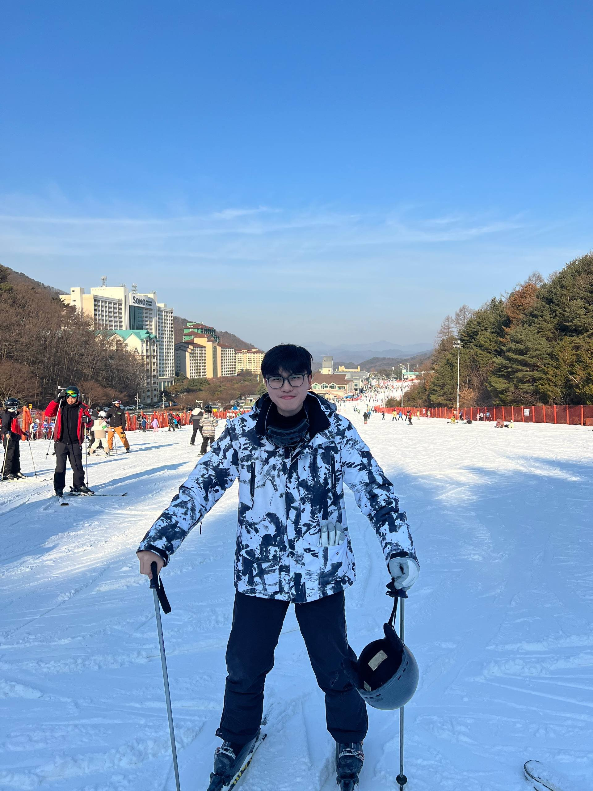
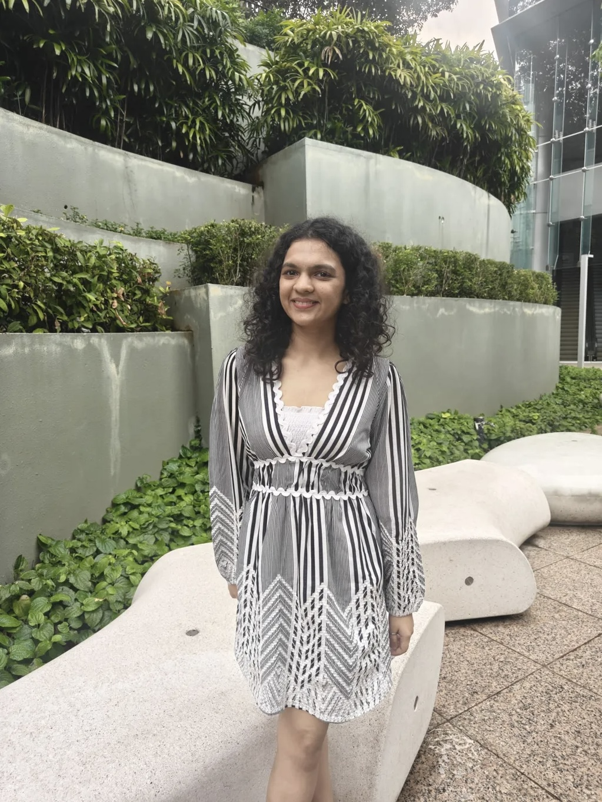

MEET OUR TEAM
The students behind NTU Semiconductor Club, building the semiconductor community in NTU.
EXECUTIVE COMMITTEE

Ray
President
Driving the club's vision, strategy and overall direction while building a strong semiconductor community.

Rishabh
Vice President (Internal)
Strengthening internal operations, student engagement and collaborations within NTU.

Roland
Vice President (External)
Building external partnerships and expanding connections with the semiconductor ecosystem.
PORTFOLIO LEADS

Bryan
Events Lead
Planning and executing company visits, workshops and semiconductor-related activities.

Pranav
Business Development Lead
Developing partnerships and creating opportunities for external collaboration.

Srishti
Publicity Lead
Managing branding, content creation and club outreach.